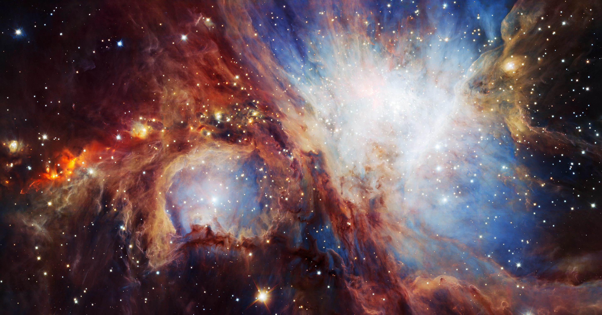
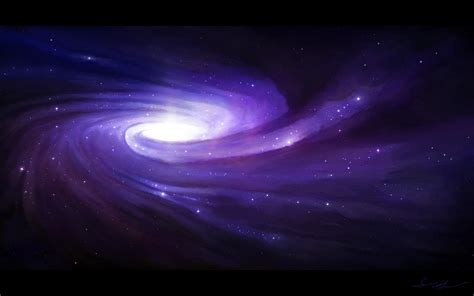

-

Spiral Galaxies
Our Milky Way is one example of a broad class of galaxies defined by the presence of spiral arms. These galaxies resemble giant rotating pinwheels with a pancake-like disk of stars and a central bulge or tight concentration of stars.
-

Elliptical Galaxies
Unlike spirals, elliptical galaxies usually contain little gas and dust and show very little organization or structure. The stars orbit around the core in random directions and are generally older than those in spiral galaxies since little of the gas needed to form new stars remains. Scientists think elliptical galaxies originate from collisions and mergers with spirals.
-

Lenticular Galaxies
Lenticular galaxies are a kind of cross between spirals and ellipticals. They have the central bulge and disk common to spiral galaxies but no arms. But like ellipticals, lenticular galaxies have older stellar populations and little ongoing star formation.
-

Irregular Galaxies
Irregular galaxies have unusual shapes, like toothpicks, rings, or even little groupings of stars. They range from dwarf irregular galaxies with 100 million times the Sun’s mass to large ones weighing 10 billion solar masses.
-

Active Galaxies
Around 10% of known galaxies are active, which means their centers appear more than 100 times brighter than the combined light of their stars. They can be spiral, elliptical, or irregular. The Milky Way is not currently an active galaxy, although it likely experienced a burst of activity in the past few million years.
-

Seyfert Galaxies
Seyfert galaxies, first identified in 1943 by American astronomer Carl Seyfert, are the most common active galaxies and also exhibit the lowest energies. All Seyferts look like normal galaxies in visible light, but they emit considerable infrared radiation. When observed in the infrared, some reveal bright emission from the donut-shaped torus. Some also emit X-rays. Seyfert galaxies tend to have lower radio luminosities, although some produce radio jets.
-

Quasars
Quasars are the most luminous type of active galaxy. They emit light across the electromagnetic spectrum, produce powerful particle jets, and can radiate thousands of times the energy emitted by a galaxy like the Milky Way. The nearest quasar, called Markarian 231, is located some 600 million light-years away, but we see many more quasars the farther we look.
-

Blazars
Blazars produce light across the electromagnetic spectrum. Their powerful jets point almost directly at Earth, so they appear brighter than other active galaxies. Observatories on Earth can sometimes detect high-energy particles – like neutrinos – produced within the jets and trace them back to their home galaxy. This information gives scientists a glimpse into the environment around the blazar’s supermassive black hole

Wanna test your skills?
Here is a small quiz for you. Select the correct answers to gain the maximum score.
1. Which are few theories that scientists have about how Lenticular galaxies evolved?
One idea suggests these galaxies are older spirals whose arms have
faded. Another proposes that lenticulars formed from mergers of
spiral galaxies.
There are many
theorise, but the most inportant one is that these type of galaxies
will be brighter with the passing of time
One theory
suggest that these galaxies have more than 1 Blackhole at their
center and that the Milkyway is one of the Lenticular Galaxies.
Not many of
these galaxies exist and they can be spotted by looking at the night
sky, without a telescope.
2. What astronomers think about the Irregular Galaxies?
Astronomers
think that in 15 million of years these type of galaxies will go
extinct
Astronomers
have discovered only 1 Irregular galaxy and that with his odd shape
will collaps due to the gravity.
Astronomers think these galaxies’ odd shapes are sometimes the
result of interactions with others
Astronomers
believe that these are the best type of galaxy and that their
irregular form makes their starts become irregular too.
3. How are the Seyferts galaxies divided by the Scientists?
Seyfert
Galaxies are divided in 6 categories: Elliptical, Active, Spiral,
Irregular, Lenticular and Happy.
Scientists divide Seyferts into two classes. Type I Seyfert galaxies
display unusual features in their visible light that imply rapid
motion near the accretion disk. Type II Seyferts show features that
imply much slower motion.
Seyfert
Galaxies have been divided in different ways. The most known ones
are: With many solar-system and without a solar-system.
Seyfert
Galaxies have no specific division. They are the most common type of
galaxy.
Q4. What are Quasars?
Quasars are
Galaxies orbiting around a Blacklhole.
Quasars are the most luminous type of active galaxy.
Quasars are a
type of solar sistem with more than 1 Sun at his center.
Quasars are
planet like Neptune, but bigger.